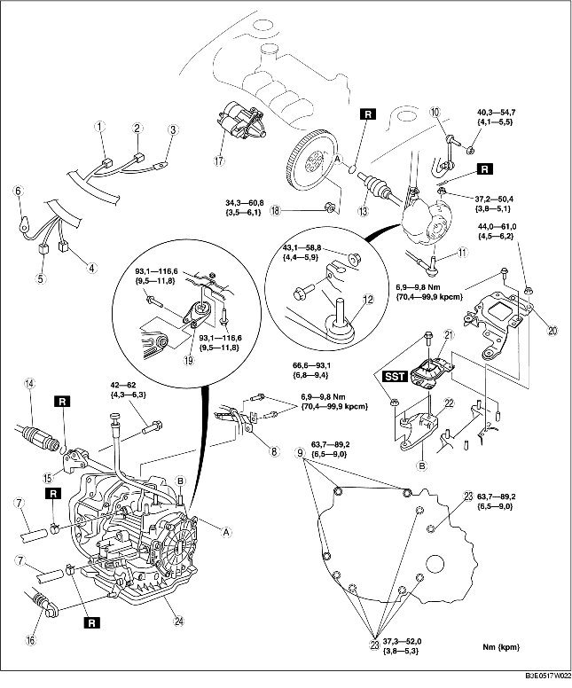

1. Demontera batterikåpan. (Se DEMONTERING/MONTERING AV BATTERI [ZJ, Z6].)
2. Lossa batteriets minuskabel.
3. Demontera batteriet, batterihållarplattan och batterilådan. (Se DEMONTERING/MONTERING AV BATTERI [ZJ, Z6].)
4. Demontera luftrenaren. (Se DEMONTERING/INSTALLATION AV INSUGSLUFTSYSTEM [ZJ, Z6].)
5. Demontera EGR-röret.
6. Demontera framhjulen och stänkplåten.
7. Ta bort den undre kåpan.
8. Tappa ur oljan i automatväxellådan. (Se BYTE AV AUTOMATVÄXELÅDSSOLJAN (ATF).)
9. Demontera i den ordning som anges i tabellen.
10. Montera i omvänd ordning mot demonteringen.
11. Fyll på växellådsolja till rätt nivå. (Se BYTE AV AUTOMATVÄXELÅDSSOLJAN (ATF).)
12. Gör ett mekaniskt systemprov. (Se TEST AV MEKANISKA SYSTEM.)

.
1. Använd en flat skruvmejsel för att låsa medbringarskivan.
2. Ta bort muttrarna till momentomvandlaren från startmotorns monteringshål.
1. Demontera servostyrningens vätskebehållare och kylvätskans expansionstank med slangen fortfarande ansluten.
2. Använd bultarna artikelnummer 99794 1025 eller M10× 1,25, längd 25 mm {0,98 in} för att montera specialverktyg i det läge som visas i bilden.
3. Sätt in en träplatta av lämplig storlek mellan främre innerskärmen och övre skyddsplåtförstärkningen.
4. Stötta motorn med specialverktyget.
5. Demontera batterihållarens fäste, motorfästets gummi Nr. 4 och fästet.
1. Lossa komponenten märkt med A och luta motorn mot växellådan.
2. Ställ en garagedomkraft under växellådan som stöd.
3. Ta bort växellådans fästbultar.
4. Demontera växellådan.
1. Ställ växellådan på en domkraft och lyft den på plats.
2. Skruva i växellådans fästbultar.
1. Montera motorfästeskonsol Nr. 4 på växellådshuset och dra åt muttrarna.
2. Montera motorfästesgummi Nr. 1 på tvärbalken och dra åt bultarna tillfälligt.
3. Placera motorfästesgummit Nr. 4 med karosspinnbultar genom hålen och dra åt bulten enligt bilden.
4. Placera batterifästeshållaren på motorfästesgummi Nr. 4 med karosspinnbultar genom hålen och dra åt bultarna och muttrarna enligt bilden.
5. Dra åt bultarna helt.
6. Ta bort specialverktygen.
1. Använd en flat skruvmejsel för att låsa medbringarskivan.
2. Håll i vevaxelns kugghjul för att förhindra att medbringarskivan roterar.
3. Dra åt momentomvandlarens fästmuttrar.